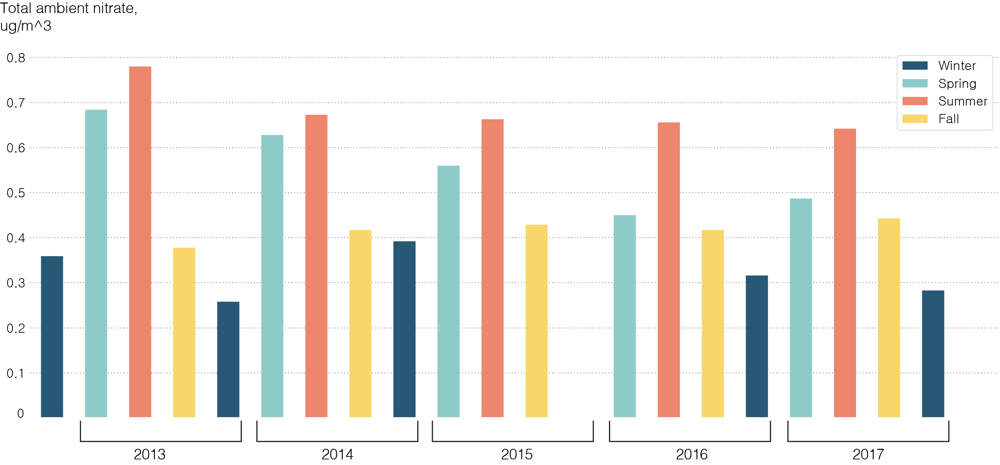
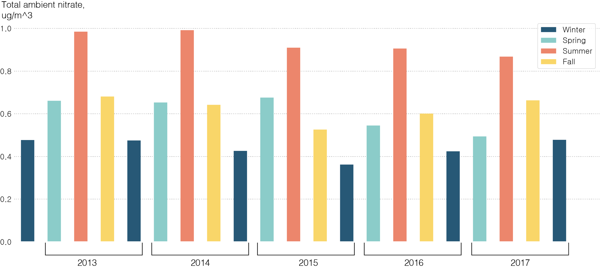
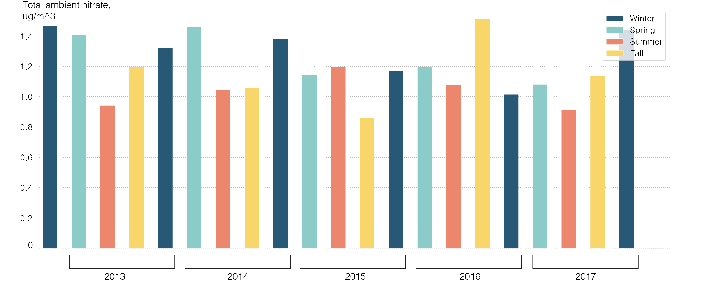
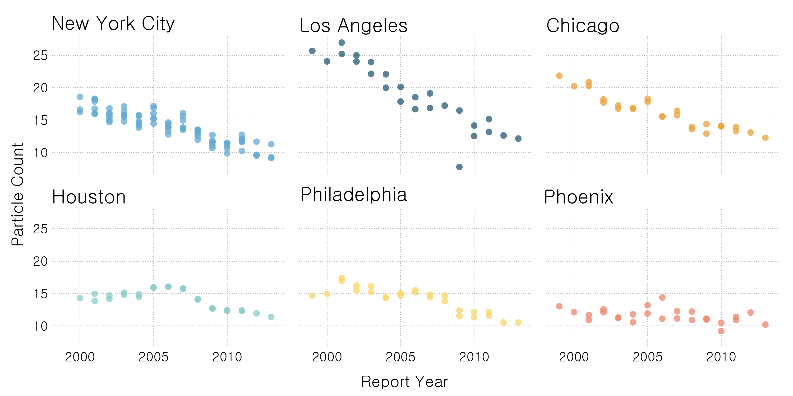

BY Veronica Penney
Published Aug. 17, 2018
As the population of the United States at large sweats through another record-hot summer, vacationers flock to destinations outside of the of the cement heat traps of the cities.
Late spring, summer and fall are the most popular months at the United States' National Parks, but these months are some of the worst times to visit the parks if the goal is to escape the smog of the cities. The National Parks furthest from urban centers--the ones that people visit to "breathe in some fresh air," experience the most noticable decline in air quality during popular visiting months.
Rocky Mtn. NP Seasonal Air Quality
Total ambient nitrate trends upward during peak visiting months
Source: The Environmental Protection Agency.
Rocky Mountain National Park is coveted for spring, summer and fall hikes, drives and backpacking trips. The park is northwest of Denver in the Rocky Mountains and trail elevations range from 7,800 to over 12,000 feet in elevation.
Frequent summer storms and high wind at elevation make the prospect of smoggy skies and poor air quality hard to envision. However, the peak visiting months for catching warm weather and bright foliage also witness the highest levels of total ambient nitrate polution.
Total ambient nitrate is just one measure of pollution, but sulfur dioxide, particulate nitrate and other airborne particles also peak during the warmer months.
Grand Canyon NP Seasonal Air Quality
Source: The Environmental Protection Agency.
Grand Canyon National Park tells much the same story as Rocky Mountain National Park. The park itself is a three hour drive from Phoenix, the closest major city, or roughly four hours from Las Vegas. Summer months experience the worst air quality at the Grand Canyon, followed by fall and spring.
Great Smoky Mountains NP Seasonal Air Quality
Total ambient nitrate in air has no clear seasonal trend
Source: The Environmental Protection Agency.
According to the National Park Service, poor air quality in Great Smoky Mountains National Park can be attributed to industry, power plants and automobile pollution originating in urban and industrial centers north of the park. Pollutants are transported by northerly wind patterns, which trap and concentrate airborne pollution in and around the park.
Annual NP Air Quality Trends
Measured as annual mean particle pollution
Source: The Environmental Protection Agency.
Compared to a major urban center like New York City, air quality in national parks, with the exception of Great Smoky Mountains is still relatively pristine. Most report annual mean particle pollution well below the EPA recommndation of 12 ug/m^3.
Although air quality as measured by particle pollution appears to have decreased in recent years, other factors like global warming and ozone pollution are not factored in to the air quality measurements in this visualization.